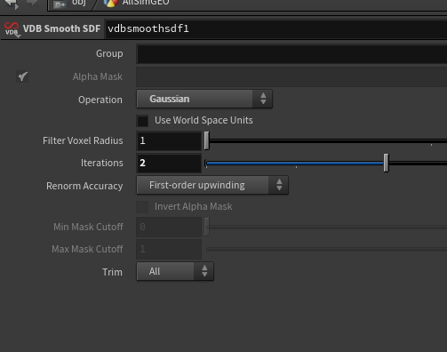

← 部落格 × Harbour
Bomin Kim（特效）

第 4 周
团队成员
2 月 2 日
Bomin Kim（特效）
Caleb Stovall（3D／2D）
Mojie Tang（特效）
Sydney Relkin（合成）
Yiqi Zheng（特效）
SCAD × HARBOR － 第 4 周
大家好，这是我 SCAD × Harbor 部落格的第四周！
导师回馈：
Vi：
-
手表上的 shader？看起来像两种 shader，零件之间要更分明
-
镜头 2 的追踪：把布局和摄影机定下来！
-
镜头 01：不平衡
Hailey：
-
最后一个镜头的设计改得很好
-
镜头 04 还没合成？泡泡又暗又实
-
镜头 01：画面需要更有力
Kyle：
-
火焰应该要像喷枪
-
镜头 01 和 02：追踪会改，把手的调色压暗，镜头 01 拉近
-
镜头 02：拿掉手（全 CG），拉近到倾倒的部分
-
镜头 04：改善灯光，更戏剧化
-
镜头 05：灯光要一致，金属表带不要那么亮
-
开始调色／重新构图
Billy：
-
把手裁掉
-
Rolex：研究一下金属
Molly：
-
镜头 03：怎么连接 FLIP 4 和 3？
-
跳过镜头 5 或 3
-
看 YouTube 上手表零件的影片（naked watchmakers）
熔融白金：
讨论后，我们决定把镜头 01 和 02 改成全 CG。镜头 02 改成呈现熔融白金倒进模具，模具的形状是手表的一部分。下一个镜头是水倒在手表上，接著是泡泡的镜头。这个修改让故事线更流畅，观众也更能理解制作手表的过程。另外，我们删掉了组装手表的镜头 05。
测试 1（算图）
流体边缘还是有点块状，一开始液体也会断断续续地分开。我还在持续改善。
测试 2（Flipbook）

这是倾倒模拟的 flipbook。边缘看起来好多了，我也加了烟雾。我调整了倒杯的角度并降低点间距，让倾倒更细致。
我把运算改成 Gaussian，让流体更平滑。
烟雾：
我上网查了资料，现实中熔融白金会和空气反应产生蒸气。因此我选取流体表面作为烟雾的来源。
参考
测试 1（烟雾）
这是烟雾单独的样子。